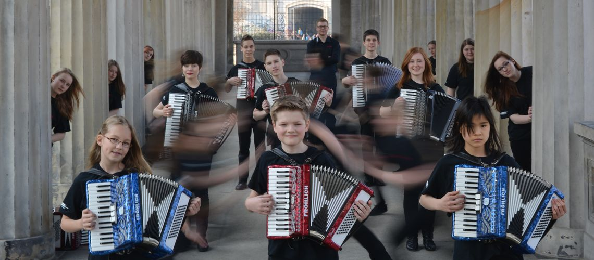

Rock & Pop auf dem „Klavier to go“
Wir holen das Akkordeon aus der verstaubten Volksmusikecke – mit jeder Menge Spielfreude, Rhythmus und guter Laune.
Junge Musik auf einem Instrument mit Geschichte.
Rund 30 Musikerinnen und Musiker im Alter von 9 bis 21 Jahren spielen bei den Tastonettis Akkordeon der besonderen Art.
Statt Volksmusik stehen bei uns Titel aus Rock und Pop auf dem Notenpult – von „Viva La Vida“ über „Summer Of '69“ bis „Highway To Hell“. Begleitet werden die Akkordeons von Schlagzeug und Bass-Akkordeon, sodass ein voller, mitreißender Orchesterklang entsteht.
Gemeinsam haben wir schon zahlreiche Feste und Feiern musikalisch umrahmt, viele Reisen und Ausflüge gemacht – von der Sommertournee auf Usedom über Auftritte im Allgäu und im Berchtesgadener Land bis zu unserer Orchesterreise mit der AIDAsol nach Norwegen – und vor allem jede Menge Spaß gehabt.

Mehr als nur Musik
Rock & Pop statt Polka
Unser Repertoire reicht von Robbie Williams und Coldplay über Tina Turner bis zur Spider Murphy Gang – frisch arrangiert für Akkordeon-Orchester.
Gemeinsam wachsen
Bei den Tastoninchen sammeln die Jüngsten erste Orchestererfahrung, bevor es ins große Orchester geht. Geprobt wird in der Grundschule am Planetarium in Berlin-Prenzlauer Berg.
Unterwegs
Konzertreisen, Tourneen und Ausflüge gehören fest dazu – an die Ostsee, in den Süden Deutschlands und bis nach Norwegen.

Wo Sie uns live erleben
Unsere Auftritte führen uns zu Stadtteil- und Sommerfesten, Weihnachtsmärkten, Senioreneinrichtungen, Einschulungsfeiern und Firmenveranstaltungen in Berlin, Brandenburg und darüber hinaus.
Sie möchten wissen, wann und wo wir als Nächstes spielen – oder uns selbst für Ihre Veranstaltung buchen? Schreiben Sie uns an tastonettis@gmail.com oder folgen Sie uns auf Instagram und Facebook.
Jetzt anfragenAusgewählte Auftritte
- WeihnachtsZauber Gendarmenmarkt, HOWOGE Tierparkfest, Zeiss-Großplanetarium u. v. a.
- Weihnachtsmarkt Krongut Bornstedt, Potsdam – drei Konzerte an den Adventswochenenden
- Weihnachtskonzerte für die milaa gGmbH und RC reweca Berlin gGmbH
- Einschulungsfeier an der Grundschule am Planetarium
- Konzert im Senioren- und Therapiezentrum „Haus am Park“, Berlin-Pankow
- Musikalischer Adventskalender auf YouTube
- Orchesterreise mit der AIDAsol: Auf der Norwegen-Tour waren wir mit an Bord – inklusive eigenem Auftritt auf dem Schiff
Lust auf Akkordeon live?
Wir spielen bis zu 90 Minuten in zwei Blöcken – in Besetzungen von 8 bis 40 Musikern. Fragen Sie uns einfach an.